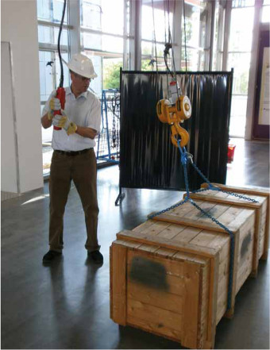

Der Kranhaken hängt nicht immer genau mittig über der Last. Die Last pendelt dann beim Anheben zur Seite. Es ist nicht vorhersehbar, wohin die Last pendeln wird.
Deshalb ist die Umgebung der Last ein Gefahrenbereich. Verhängnisvoll sind „Mausefallen", die entstehen, wenn es keine Ausweichmöglichkeit für den Anschläger gibt.
„Mausefallen" entstehen zwischen der aufzuziehenden Last und Gebäudewänden, Säulen, Maschinen, gelagertem Material, Rungen und Bordwänden auf Fahrzeugen sowie den Wänden von Laderäumen in Schiffen.

Bild 18-1: Vorsicht Pendelbewegung – Der Kranführer hat darauf zu achten, dass sich der Kranhaken über dem Lastschwerpunkt befindet und kein Schrägzug ausgeübt wird.